UxSID：面向超长序列的语义感知用户兴趣建模
快手这篇 UxSID: Semantic-Aware User Interests Modeling for Ultra-Long Sequence 把问题放在一个很典型的工业推荐矛盾里：用户历史越来越长，排序模型越想看长周期兴趣，在线服务越承受不起逐候选、逐行为的重计算。论文作者均来自 Kuaishou Technology, Beijing, China，当前公开版本是 arXiv v3，代码或项目页本轮未核验到公开入口。我的阅读重点会放在三件事上：它为什么不满足于 item-specific search 或 item-agnostic compression，SIDs 在方法里到底扮演什么条件变量，以及离线压缩、在线缓存、A/B 收益之间是否形成了闭环。
1. 背景和问题
1.1 超长行为序列的收益和成本并不同步
现代短视频、直播、电商和广告推荐面对的是极长、极稀疏、强漂移的用户行为流。论文开头给出的工业直觉很直接：活跃用户一周可能与上万条内容交互；如果排序系统只截取最近几十或一百条行为，模型确实能保持低延迟，但它看到的只是局部噪声和短期兴趣。用户对某类商品、内容、创作者、风格或场景的长期偏好，经常隐藏在更远的历史片段里。超长序列建模的目标就是把这些远距离信号重新拉回排序模型，让点击、转化、消费和长期留存不只依赖最近窗口。
难点在于，推荐系统不是离线检索任务，而是巨大实时流量上的在线排序任务。DIN、DIEN、TransAct、SASRec 或更近的生成式序列模型可以提升表达力，但注意力或序列交互常带来接近 $O(n^2)$ 或至少随序列长度线性增长的计算。论文明确提到，很多系统只能负担 $n=100$ 量级的子序列；当目标是 1k、2k 甚至 10k 行为时，直接把长序列塞进在线排序模型通常不可行。也就是说，超长序列的价值在于更完整的用户画像，代价却落在每一次候选 item 的在线推理上，二者天然不同步。
已有工作大致分成两派。第一派是 item-specific Top-K subsequence selection，代表是 SIM、TWIN、ETA、SDIM、MIRRN 这类先检索后精排的路线。它们为每个候选 item 从超长历史里找最相关的 Top-K 行为，再交给下游 attention 或精排模型。这条路线的问题不是没有目标感，而是目标感太依赖检索键、类目、hash 或 embedding 相似度。一旦检索只看“裤子”这样的表面属性，它可能错过皮带、鞋、搭配风格这类潜在协同兴趣；如果 Top-K 配额太紧，远处但重要的行为会被硬过滤掉。第二派是 item-agnostic compressed user interest memory，代表是 MIMN、LURM、C-Former、PinnerFormer 等，把超长序列离线压缩成少量静态兴趣向量，在线排序只读取这些向量。它的优点是便宜，缺点是所有候选 item 共享同一组用户记忆，容易把用户多峰兴趣压成粗粒度平均值。
1.2 两条老路线之外的第三条路
UxSID 想走的是中间路线：不为每个候选 item 在线检索一遍历史，也不把用户长期历史压成完全与目标无关的静态 embedding，而是按目标 item 的语义组共享一份用户兴趣记忆。论文称之为 semantic-specific compression。这里的关键假设是，很多候选 item 不必拥有完全私有的历史压缩结果；只要它们属于同一类足够细的语义簇，就可以共享同一份“面向该语义簇的用户兴趣压缩”。这样，目标相关性不再细到 item 级别，计算和存储也不再完全退化为全候选交叉。
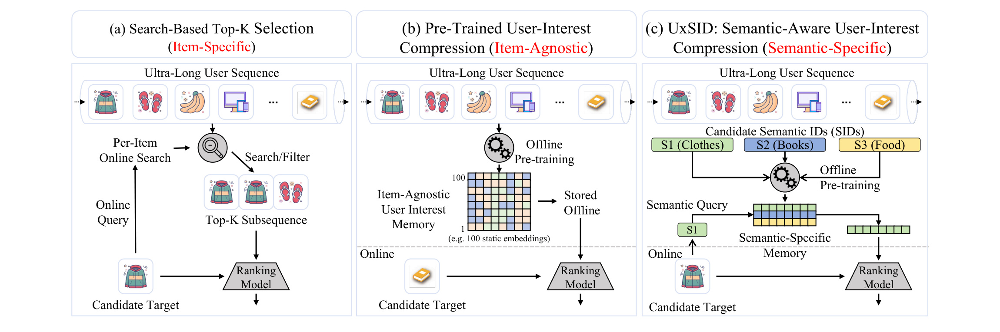
这张动机图最值得注意的是第三列。UxSID 不是在在线阶段对 candidate target 逐个 search/filter，而是在离线预训练阶段利用 candidate Semantic IDs 触发 semantic query，生成 semantic-specific memory，再把这份 memory 存起来给 ranking model 使用。它保留了 item-specific search 的一部分目标感：目标的语义 ID 会影响用户历史如何被压缩；同时又保留了 compression 路线的服务效率：在线模型读取的是预计算的 memory，而不是每次面对 10k 行为重新做复杂 attention。换句话说，UxSID 把“候选 item 相关性”降维成“候选语义簇相关性”，用语义簇共享来换服务可行性。
这个设定的成立依赖 SIDs 质量。传统 item ID 只是离散符号，PID embedding 只能靠交互共现学习语义；SIDs 则来自多模态内容、协同信号和世界知识对齐后的量化编码，理论上更接近 item 的语义簇。论文引用 RQ-VAE、QARM、OneRec 等方向，把 SIDs 视为高密度语义 probe。如果这个 probe 足够细，它就能比类目 tag 更精准地指向用户历史里的相关兴趣；如果它足够稳定，它又能让同一 SID 下的候选共享缓存结果。UxSID 的贡献因此不是简单“给模型加一个 SID 特征”，而是把 SID 放到用户历史压缩过程本身，成为压缩方向的条件变量。
1.3 论文真正要证明的三件事
第一，semantic-specific compression 是否比两条已有路线更好。UxSID 必须证明它既能超过 search-based 方法，如 SIM、TWIN、ETA、SDIM、MIRRN，也能超过 static compression 方法，如 C-Former。第二，收益是否来自结构，而不是只来自把 SID 作为 item 侧新特征。论文在附录做了给所有 baseline 加 SID 特征的对照，结论是 baseline 会有小幅提升，但 UxSID 仍明显领先。第三，系统是否真的能落地。超长序列论文很容易只在离线 AUC 上成立，但 UxSID 还报告了快手广告线上 A/B、embedding server 存储量、10k 序列离线训练 GPU 需求、在线额外延迟等，这些是判断工业价值的关键证据。
我对这篇论文的读法是：它不是在提出一个通用序列模型替代 Transformer，也不是在讨论推荐系统是否应该使用语义 token。它更像一个工业折中方案，把“长历史建模”拆成两个问题：离线阶段如何用目标语义簇重新压缩用户历史，在线阶段如何让排序模型只付出常数级读取成本。这个拆分是否有效，取决于 SIDs 的语义分辨率、每个用户活跃 SID 数量、缓存更新频率和线上流量中目标 SID 分布是否足够集中。
2. 方法
2.1 总体结构：用 SID 把离线压缩变成目标语义条件压缩
UxSID 的整体结构由三部分组成。第一部分是 SIDs Generation，把 item 的视频帧、文本描述、类目、标签或其他属性编码成离散语义 ID。第二部分是 Item-Agnostic Interest Compression，也就是 IAIC，它先不看具体目标 item，而是把用户原始长行为序列压成 $K$ 个兴趣锚点。第三部分是 Hierarchical Semantic Probing，它用目标 SID 先查询原始行为序列得到 global response，再通过 gate 调整目标 SID，并到压缩锚点里查询 local response。最终的 $\mathbf{E}^{UxSID}$ 是 global 与 local 两路结果的拼接。
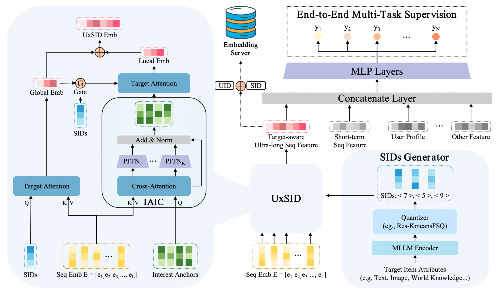
图中右侧的 SIDs Generator 负责生成目标 item 的语义编码；中间的 UxSID 模块负责用户历史压缩；最上方和右上方展示了 Embedding Server 与端到端多任务监督。值得关注的是，UxSID 的压缩不是“先压缩用户，再让目标 item 与压缩结果交互”这么简单。它在压缩链路里保留两级目标语义交互：一是 $c_{target}$ 对 raw sequence 做 target attention 得到 global embedding；二是 global embedding 经过 gate 反过来调制 $c_{target}$，再对 IAIC anchors 做 local attention。这使得最终 embedding 既包含目标语义对完整历史的细粒度扫描，也包含压缩兴趣空间里的去噪选择。
从输入输出看，UxSID 接收的是用户超长行为序列 $\mathcal{B}=[b_1,b_2,\dots,b_L]$、目标 item 的 SID $c_{target}$ 以及用户、上下文、短期行为等排序特征。离线阶段输出 target-aware 的 $\mathbf{E}^{UxSID}$，在线阶段这个向量作为额外用户历史特征进入 ranking model。与 search-based 方法相比，在线模型不再对每个候选执行 Top-K search；与 item-agnostic compression 相比，缓存的 embedding 不再只有 user 维度，而是与 $UID$ 和 $SID$ 共同绑定。
2.2 SIDs 生成：MLLM 表征与残差量化
SIDs 的生成过程先把 item 属性编码到连续语义空间。论文写成：
符号解释：$i$ 表示候选或历史 item，$\text{Attributes}_i$ 是该 item 的多模态属性集合，$\text{Enc}_{\text{MLLM}}$ 是多模态编码器，$\mathbf{z}_i \in \mathbb{R}^d$ 是连续语义向量。用 MLLM encoder 的目的是让 item 表征不只来自点击共现，而是带有内容理解和业务语义。随后，论文使用 Res-KmeansFSQ hybrid quantization，把连续向量分解成 $M$ 个层级 codebook 上的离散码：
符号解释：$M$ 是量化层数，$\mathcal{C}_m$ 是第 $m$ 层 codebook，$k_m$ 是第 $m$ 层选中的离散码，$\mathbf{c}_{m,j}$ 是第 $j$ 个 codeword，$\mathbf{r}_m=\mathbf{z}_i-\sum_{l=1}^{m}\mathcal{C}_l(k_l)$ 是量化残差。这个公式的直觉是逐层解释 item 的语义残差：第一层编码粗语义簇，后续层补充更细粒度差异。论文在工业部署中主要使用第一层 code $k_1$ 作为 target SIDs，也就是 $c_{target}$。这不是说更深层编码没有价值，而是第一层在语义粒度、活跃 SID 数量、缓存规模和延迟之间更容易平衡。
这一设计有两个工程含义。第一，SIDs 的训练和更新不是 UxSID 排序模型内部的临时 embedding lookup，而是一个可复用的 item tokenization 基础设施。附录提到它沿用了 QARM V2 和 OneRec-v2 的 codebook 架构，第一层 codebook size 为 4096，embedding lookup dimension 为 32。第二，UxSID 的上限被 SIDs 质量约束。如果 SIDs 过粗，就会退化成 category tag；如果过细，每个用户活跃 SID 数量和缓存 key 数量会上升，semantic-specific 共享优势会被削弱。
2.3 IAIC：从原始行为到 K 个 item-agnostic interest anchors
IAIC 的目标是先把原始行为序列压成 $K$ 个兴趣锚点 $\mathbf{P}\in\mathbb{R}^{K\times d}$，其中 $K\ll L$。这一步暂时不使用目标 SID，而是构造一个结构化、可被后续 semantic probe 查询的兴趣池。给定用户历史行为 embedding 矩阵 $\mathbf{E}=[\mathbf{e}_1,\dots,\mathbf{e}_L]\in\mathbb{R}^{L\times d}$，论文定义一组可学习 anchor queries $\mathbf{Q}_{anc}\in\mathbb{R}^{K\times d}$，用 cross-attention 汇聚长序列：
符号解释：$\mathbf{Q}_{anc}$ 是 $K$ 个可学习兴趣 query，$\mathbf{E}$ 是长度为 $L$ 的行为 embedding 矩阵，$\mathbf{W}^Q,\mathbf{W}^K,\mathbf{W}^V$ 是 attention 投影矩阵，$\mathbf{H}=[\mathbf{h}_1,\dots,\mathbf{h}_K]^\top$ 是初步压缩兴趣。这个公式和普通 attention 很像，但 query 不是候选 item，而是 $K$ 个 learnable interest anchors。它的作用类似“让模型自己学会用 $K$ 个槽位覆盖用户长期行为的不同区域”。如果用户历史里同时有游戏、服饰、零食、旅游等多种兴趣，理想情况下不同 anchor 会分别吸收不同兴趣峰，而不是都盯着最近或最频繁行为。
为了让每个 anchor 拥有更独立的变换能力，论文又对每个 $\mathbf{h}_k$ 使用 Per-token Feed-Forward Networks：
符号解释：$\mathbf{p}_k$ 是第 $k$ 个最终兴趣锚点，$\sigma$ 是 sigmoid，$\mathbf{W}_1^{(k)},\mathbf{W}_2^{(k)},\mathbf{b}_1^{(k)},\mathbf{b}_2^{(k)}$ 是第 $k$ 个 anchor 专属参数，LayerNorm 负责稳定残差输出。也就是说，IAIC 不只是把 $K$ 个 anchor 当成 attention 输出后的 $K$ 行向量，还给每个 anchor 独立的非线性子空间。这样的好处是不同 anchor 可以学习不同兴趣模式；代价是参数量和训练稳定性会更依赖 $K$ 的选择。论文实验里最终取 $K=16$，并在参数分析里说明 $K=4$ 容量不足，过大的 $K=32$ 又可能带来冗余和噪声。
2.4 正交约束：防止兴趣锚点塌缩
只用 learnable anchors 做压缩有一个常见风险：多个 anchor 可能学到相似的高频兴趣，导致 $K$ 个槽位名义上很多，实际上只覆盖同一类模式。UxSID 用 normalized orthogonality loss 限制这种塌缩：
符号解释：$\mathbf{P}$ 是所有兴趣锚点组成的矩阵，$\mathbf{P}\mathbf{P}^T$ 描述锚点两两相似度，$\|\mathbf{P}\|_2^2$ 做尺度归一化，$\mathbf{I}$ 是单位矩阵，$\|\cdot\|_F$ 是 Frobenius norm。$\mathbf{P}\mathbf{P}^T$ 描述 anchor 两两相似度，除以 $\|\mathbf{P}\|_2^2$ 是为了让约束对尺度更稳定。这个损失希望非对角项尽量小，对角项接近 1，使不同 interest anchors 更独立。
从推荐建模角度看，正交约束的价值不在数学形式本身，而在它让“长期兴趣多峰性”变成可优化对象。用户的历史不是一个单峰分布，尤其在 10k 行为下，最近兴趣、周期性兴趣、低频高价值兴趣、广告转化兴趣可能同时存在。没有多样性约束，压缩模块容易追逐平均收益最高或曝光最多的兴趣；有正交约束后，模型至少被鼓励把压缩容量分配到不同方向。消融表显示去掉 $\mathcal{L}_{ortho}$ 后指标下降，说明这个约束确实在 UxSID 中承担了防塌缩作用。
2.5 Hierarchical Semantic Probing：global attention、gate 与 local anchors
IAIC 产出的 $\mathbf{P}$ 仍然是 item-agnostic 的。UxSID 真正变成 semantic-specific 的地方，是 Hierarchical Semantic Probing。第一阶段是 explicit semantic probing，用目标 SID 直接查询原始行为序列：
符号解释：$c_{target}$ 是目标 item 的第一层 SID embedding，$\mathbf{W}_g^Q,\mathbf{W}_g^K,\mathbf{W}_g^V$ 是 global attention 投影矩阵，$\mathbf{e}_{global}$ 是目标语义对完整历史的响应。它像一个轻量版“目标语义扫描器”：不是把所有历史压缩后再看目标，而是先让 $c_{target}$ 到原始行为里找相关位置。这能弥补纯 compression 容易丢掉高频以外细节的问题。消融中去掉 $\mathbf{e}_{global}$ 会带来明显下降，说明原始历史上的显式目标语义对齐不是可有可无。
第二阶段先用 global response 生成 gate：
再用 gate 调制目标 SID：
符号解释：$\mathbf{g}_{ctx}$ 是由 global response 生成的上下文门控向量，$\sigma$ 限制门控取值，$\odot$ 是 Hadamard product，$\mathbf{q}_{ref}$ 是用户上下文调制后的目标语义 query。直觉上，$c_{target}$ 描述目标 item 所属语义簇，但同一个目标语义对不同用户不应以完全相同方式查询压缩兴趣。$\mathbf{e}_{global}$ 已经看过用户原始历史，因此 gate 可以把目标 SID 调整成更符合该用户上下文的 refined query。比如同属“服饰”的 SID，对于一个长期看运动内容的用户和一个长期看商务穿搭的用户，应该激活不同潜在兴趣维度。
最后，refined query 到 IAIC anchors 上做 local attention：
符号解释：$\mathbf{W}_l^Q,\mathbf{W}_l^K,\mathbf{W}_l^V$ 是 local attention 投影矩阵，$\mathbf{P}$ 是 IAIC 压缩兴趣池，$\mathbf{e}_{local}$ 是 refined query 在压缩空间中抽取的局部兴趣。
最终表示为：
$ \mathbf{E}^{UxSID}=[\mathbf{e}_{global};\mathbf{e}_{local}] $
符号解释：分号表示向量拼接，$\mathbf{E}^{UxSID}$ 同时保留原始历史上的语义响应和压缩兴趣空间中的去噪响应。
这个两级结构的强点在于分工清楚。$\mathbf{e}_{global}$ 负责不丢失目标相关的原始行为信号，尤其是长尾或远距离行为；$\mathbf{e}_{local}$ 负责在压缩兴趣池中去噪和概括，让在线服务不需要面对完整长序列。gate 则把两者连接起来，避免 local query 只是裸 SID。消融中去掉 $\mathbf{e}_{local}$、去掉 gate 都会下降，说明论文不是只靠 SID 直接 attention 或只靠 anchor compression，而是靠这条“原始历史响应 -> 上下文门控 -> 压缩兴趣查询”的链路。
2.6 训练目标与生产部署
训练时，UxSID 的输出与目标特征、用户画像、上下文和短期行为一起进入排序 MLP：
主任务使用二分类交叉熵，并加入正交约束：
符号解释：$\mathbf{E}^t$、$\mathbf{E}^u$、$\mathbf{E}^c$、$\mathbf{E}^{short}$ 分别是目标、用户、上下文和短期行为特征，$p(x)$ 是样本 $x$ 的预测概率，$y_n$ 是二分类标签，$N$ 是样本数，$\lambda$ 是正交损失权重。这个损失说明 UxSID 没有另设复杂的对比学习或生成目标，而是端到端围绕推荐任务优化。$\lambda$ 控制 anchor diversity 与主任务之间的权衡。参数分析显示 $\lambda$ 过小多样性不足，过大又可能破坏 CTR/CTCVR 预测空间，因此它是一个需要根据业务数据调的正则强度。
生产服务中，论文给出 key-value 形式：
符号解释：$UID$ 是用户标识，$SID$ 是目标语义标识，$\oplus$ 表示拼接或组合后参与 hash，Value 是预计算的 $\mathbf{E}^{UxSID}$。在线请求到来时，系统根据用户和目标 SID 从 Embedding Server 点查 $\mathbf{E}^{UxSID}$，再把它作为 target-aware user history embedding 输入排序模型。理论上这把超长序列建模从在线序列计算变成了在线 KV lookup。关键代价转移到离线：需要周期性生成每个用户在活跃 SID 上的 UxSID embedding，并维护 embedding server 的存储与更新。
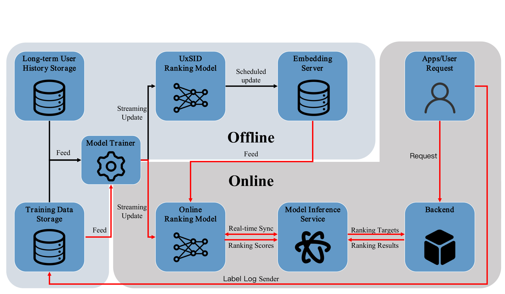
部署图里黑色路径是离线 UxSID embedding generation，红色路径是在线模型训练和推理。长历史存储和训练数据存储持续喂给 model trainer，UxSID ranking model 定期产出 embedding，Embedding Server 随计划更新；在线请求则通过 backend、model inference service 和 online ranking model 获取 ranking scores。附录给出的工程数值很重要：在快手 4 亿活跃用户语境下，平均每用户约 100 个活跃 SIDs，总存储约 2.56 TB；1k 序列的 UxSID 离线训练需要 16 张 A10，10k 序列需要 40 张 A10；若直接把在线 ranking model 从 1k 扩到 10k，估算需要约 5300 张 A10，而 UxSID 增加的在线延迟约 +0.16 ms。这个对比解释了为什么论文愿意接受离线生成和存储开销：它换来的是在线推理成本与原始序列长度解耦。
3. 实验结果
3.1 数据集、baseline 与指标
论文在两个公共数据集和一个快手广告工业数据集上评估。XLong 有 1,000 个用户、3,269,017 个 item、1,000,000 条交互，平均和最大序列长度均为 1,000；KuaiRec-Big 有 7,176 个用户、10,728 个 item、12,530,806 条交互，平均序列长度 1,746，最大截到 3,000。工业数据集来自快手广告系统 2026 年 4 月 1 日到 4 月 7 日的曝光日志和标签，每个用户历史保留到 10k。公共实验使用 Adam，batch size 256，learning rate 0.001，embedding dimension 16；UxSID 的 gating network 是 $\{16,16\}$，PFFNs 是 $\{16,32,16\}$，公共数据集 SID codebook 形状为 $[256\times256\times256\times256]$，IAIC anchors 数量为 16。
baseline 包括 DIN、SIM-Hard、SIM-Soft、ETA、SDIM、MIRRN、TWIN、C-Former。这里覆盖了传统 target attention、search-based ultra-long sequence retrieval、hash/sampling 检索、多粒度兴趣检索，以及 compression-based 模型。指标方面，公共表使用 AUC；工业离线表使用 CTR 和 CTCVR 下的 AUC、UAUC、WUAUC；消融还加入 Interest Recall@$K$，即 explicit semantic probing 注意力 Top-$K$ 行为中，与目标共享第一层 SID 或 category tag 的比例。这个 Int.R@K 不是业务最终指标，但能判断 SIDs 是否真的在激活语义相关历史，而不是只提供额外稀疏特征。
3.2 公共数据集主结果
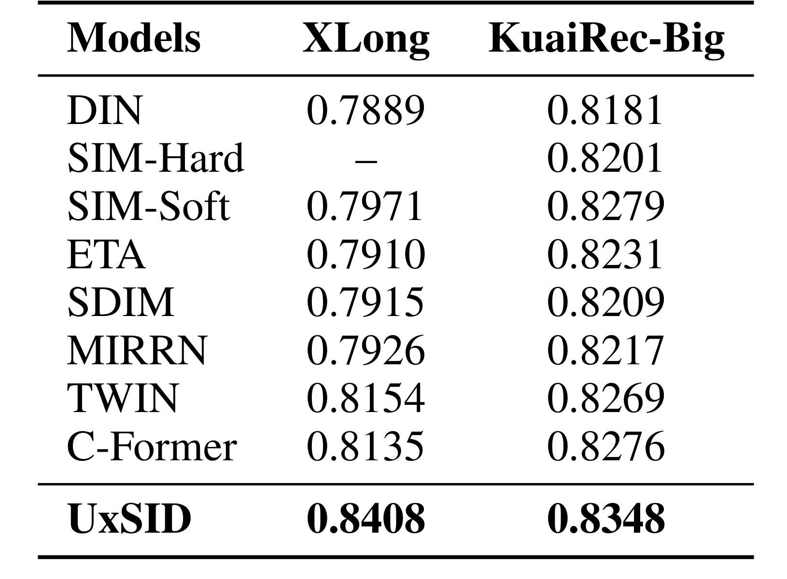
公共结果里，UxSID 在 XLong 上达到 0.8408 AUC，在 KuaiRec-Big 上达到 0.8348 AUC，均高于所有 baseline。XLong 上最强 baseline 是 TWIN 0.8154，C-Former 是 0.8135；UxSID 与它们的差距比较明显。KuaiRec-Big 上 SIM-Soft 是 0.8279，TWIN 是 0.8269，C-Former 是 0.8276，UxSID 为 0.8348，绝对差距不像 XLong 那么大，但仍稳定领先。
这个结果支持论文的两个判断。第一，search-based 方法在更长序列下受检索范围和 key space 限制，即便 TWIN 通过端到端对齐改进 GSU/ESU，也不等于能完整捕获目标语义相关的远距离兴趣。第二，C-Former 这类 compression 方法虽然在线便宜，但压缩是 target-agnostic 的，面对目标 item 的细粒度偏好时容易混入无关兴趣。UxSID 通过 SID 条件压缩在两者之间取得更好的折中。
附录稳定性表显示，UxSID 在 KuaiRec-Big 三个 seed 的平均为 $0.8348\pm0.0001$，XLong 为 $0.8415\pm0.0023$。这说明公共结果不是单次随机种子偶然值。不过要注意，公共数据集上的 SID 构造依赖内容特征和 LETTER 工具链，论文采用的预处理和 SIDs 训练细节会显著影响复现难度。
3.3 工业离线结果
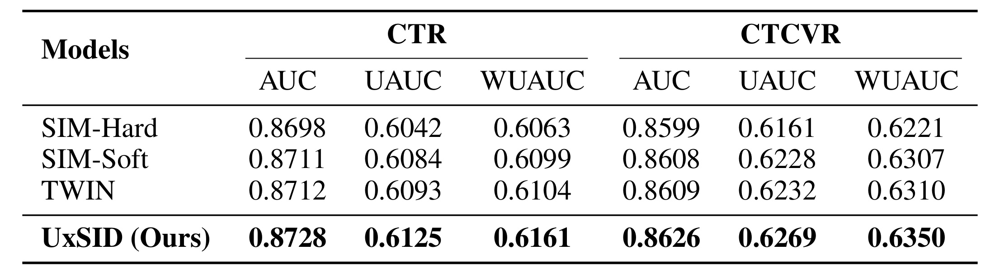
工业离线结果更贴近论文目标场景。UxSID 在 CTR 上达到 AUC 0.8728、UAUC 0.6125、WUAUC 0.6161；在 CTCVR 上达到 AUC 0.8626、UAUC 0.6269、WUAUC 0.6350。相比 SIM-Soft 和 TWIN，论文特别强调 CTCVR AUC 分别提升约 +0.18% 和 +0.17%。在大流量广告排序中，0.1% 量级的离线 AUC 增益通常已经值得关注，因为它可能对应明显的转化和收入变化。
我更看重的是 UxSID 在 UAUC/WUAUC 上也同步提升。AUC 容易被大用户或高曝光 item 影响，UAUC 更关心用户级排序质量，WUAUC 则考虑权重后整体表现。UxSID 同时提升这些指标，说明它不是只改善了少数高流量用户或某一类曝光场景。它的用户-语义缓存机制理论上也更适合个性化：同一目标 SID 对不同用户有不同 $\mathbf{E}^{UxSID}$，同一用户对不同 SID 也有不同兴趣压缩。
3.4 线上 A/B
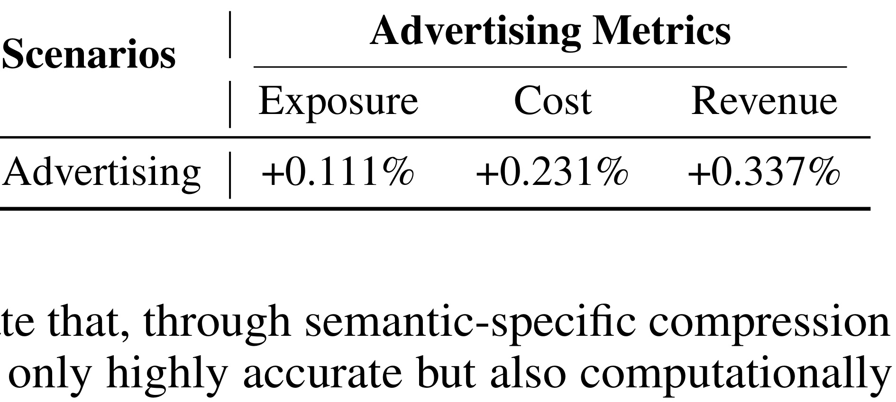
线上 A/B 表非常短，但信息密度高：Advertising 场景下 Exposure +0.111%、Cost +0.231%、Revenue +0.337%。论文解读 Revenue 增幅大于 Exposure，说明模型不只是带来更多曝光，而是倾向于更高精度转化。这个判断是合理的，但也需要保持边界：表中没有给出实验周期之外的方差、显著性检验、分桶规模、广告主结构变化或长期留存影响，因此只能把它视为论文报告的线上增益证据，而不是可外推到所有业务的确定收益。
从工程角度看，A/B 的关键是 UxSID 没有因为额外 embedding lookup 带来不可接受延迟。若线上收益必须以大幅增加 GPU 或 p99 延迟为代价，广告收入增益可能被成本抵消；附录的 +0.16 ms 和存储估算补上了这部分论证。也就是说，A/B 表和部署附录需要一起看：前者证明业务侧有收益，后者证明收益没有明显违反服务约束。
3.5 消融
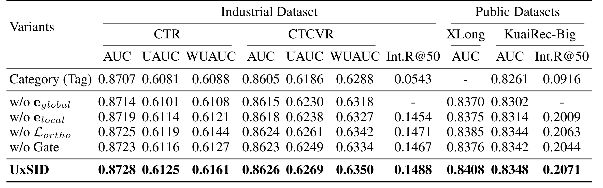
消融表回答了“到底是哪一块有效”。首先，Category (Tag) 版本明显弱于 UxSID。工业数据集上 Category 的 CTR AUC 为 0.8707，CTCVR AUC 为 0.8605，Int.R@50 为 0.0543；UxSID 对应是 0.8728、0.8626、0.1488。KuaiRec-Big 上 Category 的 AUC 为 0.8261，Int.R@50 为 0.0916；UxSID 为 0.8348 和 0.2071。这个差距说明 category tag 太粗，无法替代 SIDs 作为高分辨率语义 probe。
其次，去掉 $\mathbf{e}_{global}$ 和去掉 $\mathbf{e}_{local}$ 都会下降，但含义不同。没有 $\mathbf{e}_{global}$，模型失去对原始长序列的显式目标语义扫描，只剩在压缩兴趣上查询，容易把远距离精确信号抹掉。没有 $\mathbf{e}_{local}$，模型失去压缩兴趣池中的结构化去噪能力，虽然还能直接看 raw sequence response，但无法利用 IAIC 多兴趣锚点概括长周期偏好。两路都保留时，模型既能看原始细节，又能利用压缩抽象。
去掉 gate 和去掉 $\mathcal{L}_{ortho}$ 的下降更像对结构稳定性的验证。没有 gate，目标 SID 不能被 global context 调制，local probing 变成更生硬的语义查询；没有正交损失，anchors 更容易学到相似兴趣，削弱多峰覆盖。附录的 SID feature attribution 也很重要：当所有 baseline 都额外加入 item-side SID 特征后，它们确实提升，但 UxSID Base 和 UxSID + SID 仍领先。这说明收益主要来自 IAIC 与 hierarchical routing 结构，而不是“多喂一个 SID 稀疏特征”。
3.6 复杂度与伸缩性
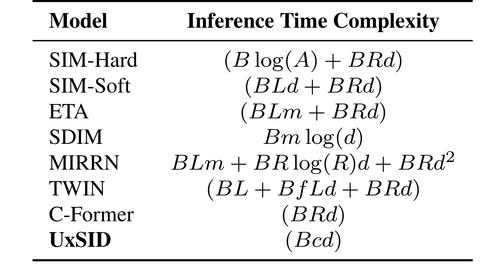
复杂度表把 UxSID 的位置讲得很清楚。SIM-Hard 仍有 $B\log(A)+BRd$，SIM-Soft 有 $BLd+BRd$，ETA 有 $BLm+BRd$，MIRRN 有 $BLm+BR\log(R)d+BRd^2$，TWIN 有 $BL+BfLd+BRd$。这些表达式里常出现 $L$、$R$、attribute index、hash functions 或 feature 数量，意味着在线推理与原始序列长度或检索过程绑定。C-Former 和 UxSID 都属于压缩路线，表中分别是 $BRd$ 和 $Bcd$；UxSID 的 $c$ 是压缩兴趣长度，在线主要与缓存 embedding 维度和后续轻量 attention 相关。这里的重点不是 UxSID 完全没有计算，而是在线复杂度不再显式依赖原始历史长度 $L$。只要 $c$ 和 embedding 维度固定，用户历史从 1k 扩到 10k 时，排序侧读取和交互的张量形状仍可保持稳定；这也是它能把重计算搬到离线生成链路的原因。
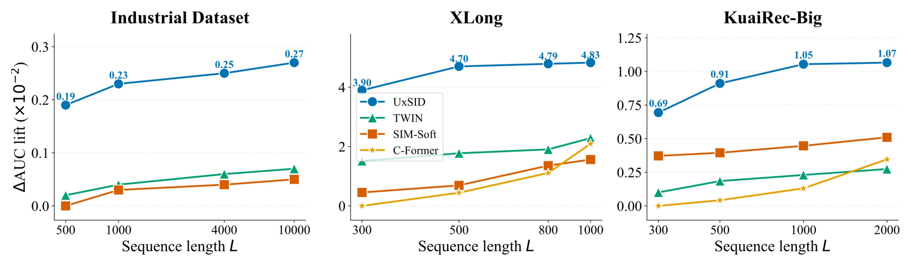
伸缩图显示，随着序列长度增加，UxSID 的增益继续扩大，尤其在工业数据集 10k 序列上更明显。论文对这个现象的解释是，search-based 模型的固定检索范围会逐渐成为瓶颈，长历史越长，Top-K 越容易错过远距离相关行为；static compression 模型在长序列下也会面对更多噪声和兴趣混合。UxSID 则利用 SIDs 路由，把更长历史里的目标语义片段转化为可缓存的 target-aware embedding。
不过这里也有一个需要注意的复现口径：图中是 AUC improvement percentage points，不是原始 AUC 曲线；不同数据集的横轴长度不同，工业数据集可以到 10k，XLong 到 1k，KuaiRec-Big 到 2k。它说明 UxSID 在论文设定下随长度扩展收益更好，但不代表任意业务把历史扩到 10k 都会单调增益。实际业务中，行为去重、时间衰减、负反馈、item 生命周期和 SID 更新频率都会影响长序列质量。
3.7 参数敏感性
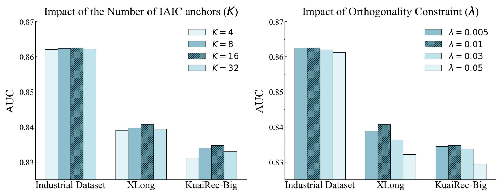
参数图的第一组看 $K$。当 $K=4$ 时，三个数据集表现都不如 $K=8$ 或 $K=16$，说明兴趣锚点太少会形成容量瓶颈，多个用户兴趣被迫缠在一起。$K=16$ 通常最好；$K=32$ 没有继续稳定提升，可能因为 anchors 过多后引入冗余、噪声或查询分散。这个现象符合 IAIC 的设计直觉：它需要足够槽位表达多峰兴趣，但槽位不是越多越好。
第二组看 $\lambda$。$\lambda$ 太小，正交约束不足，anchors 可能塌缩；$\lambda$ 太大，模型为了让 anchors 分离而牺牲主任务预测空间。图中不同数据集的最佳 $\lambda$ 不完全一致，说明这是需要验证集或线上 guardrail 调的超参。复现时不能只照抄一个 $\lambda$，更应该观察 anchors 之间相似度、Int.R@K、AUC/UAUC 和线上延迟共同变化。
3.8 可视化案例
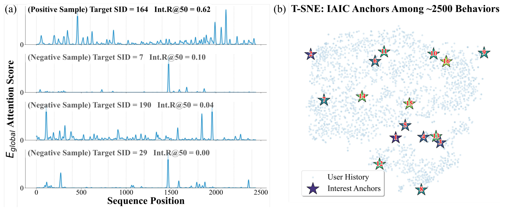
案例图左侧展示了不同 target SID 下的 attention score 分布。正样本 target SID 的 Int.R@50 为 0.62，负样本分别是 0.10、0.04、0.00，说明 SID-based attention 能把目标语义相关历史行为激活出来。更重要的是，这些高 attention 行为并不只集中在序列末端，早期行为也可能被激活。这正是 ULSM 想解决的问题：让远距离但语义相关的历史仍能影响当前排序。
右侧 t-SNE 图展示 IAIC anchors 分布在约 2500 条行为之间。星形 anchors 覆盖了不同区域，而不是聚在一个点附近。这与正交约束和 PFFN 的设计目标一致：让压缩兴趣不是单一平均向量，而是多个可被目标 SID 查询的兴趣峰。这个图不能单独证明模型效果，但它帮助解释为什么 UxSID 的 local probing 有意义：如果 anchors 本身多样，target SID 才能在压缩空间里选择合适兴趣；如果 anchors 塌缩，local probing 只是在同一团记忆上反复 attention。
4. 总结
4.1 我的判断
UxSID 的核心价值在于把工业推荐里一个长期存在的取舍重新参数化：不是“在线逐候选检索完整历史”或“离线压缩成目标无关用户 embedding”二选一，而是用 SIDs 把候选 item 映射到语义簇，再为每个用户-语义簇缓存 target-aware 长历史表示。这个设计很适合有成熟 SID/item tokenization 基础设施、用户历史很长、在线延迟很紧、目标 item 可被稳定语义分桶的场景。论文的公共结果、工业离线结果和 A/B 表共同支持它是一个有效工业方案，而不是纯离线模型技巧。
它对推荐系统工程的启发是，长序列建模不一定要在线模型直接变大。可以把长序列理解为“需要按不同目标语义视角预计算的用户记忆库”，把最重的历史交互计算放到离线或准实时链路，把在线阶段压成 KV lookup 加轻量交互。这个思路也提示我们评估长序列模型时不能只看 AUC，还要看活跃语义 key 数量、缓存更新周期、embedding server 存储、增量延迟和线上收益是否匹配。
4.2 复现建议
复现这篇论文时，我会先做四个最小闭环。第一，先稳定 SIDs 训练，不要急着实现完整 UxSID；检查第一层 SID 是否比 category tag 有更好的语义聚类，能否提升 Int.R@50。第二，实现 IAIC anchors 和正交约束，监控 anchors pairwise similarity，确认 $K=8/16/32$ 下是否存在塌缩。第三，分别打开 $\mathbf{e}_{global}$、$\mathbf{e}_{local}$ 和 gate，复现实验表中各模块的单调贡献。第四，在离线评估外估算 $UID\oplus SID$ key 数量、embedding 维度、存储量和更新频率；如果活跃 SID 数远高于论文假设的约 100 个/用户，服务成本可能会明显变化。
4.3 局限与后续跟进
这篇论文仍有几个边界。第一，SIDs 是强前提，若业务 item 内容质量差、语义编码更新滞后或 SID 粒度不合适，UxSID 可能退化。第二，线上 A/B 表较简洁，没有公开显著性、分桶规模和长期效果，Revenue +0.337% 需要按论文报告理解，不能直接外推。第三，缓存 key 是 user-SID 组合，虽然平均 100 个活跃 SIDs/用户在快手场景可控，但不同业务的 SID 分布可能更长尾。第四，论文主要围绕广告排序和公共长序列数据，未展示冷启动 item、突发热点、用户兴趣剧烈漂移时的更新延迟影响。后续我会重点关注三类工作：更强的 SID 生成和在线更新机制；用户-语义缓存的增量刷新策略；以及把 semantic-specific memory 接入召回、粗排、精排多阶段系统时的收益归因。